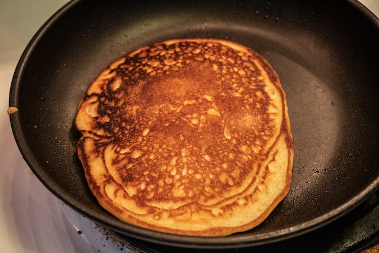

Description
Baby banana pancakes are produced with only three ingredients: oats, bananas, and eggs. Prepared in 10 minutes, they are ideal for 6 month old baby-led weaning, toddlers, and even adults. Breakfast or on-the-go snack with peanut butter and fruit. After you've made them, they'll become a kitchen staple. They are gluten-free and naturally dairy-free, and may be produced using egg substitutes (vegan).
I have to admit that this is my favorite baby/toddler meal that I make several times a week. At our family, these are a sure way to get the kids to eat in the morning!
Ingredients
- Bananas - For sweetness and digestibility, use completely ripe or overripe bananas. Bananas are high in calories, have high levels of vitamins B6 and C, and are high in potassium.
- Eggs - If feasible, buy organic or free-range eggs. Eggs hold the entire mixture together, preventing the pancake from falling apart. The egg whites are high in protein, while the yolk is high in healthful fats. If you have not yet introduced your newborn to egg, it is recommended to do so before making these pancakes, providing the yolk and white separately as each is an allergy. Scroll down to see how to create these no-egg pancakes.
- Oats - You may use instant, rolled, or oat flour. Because rolled oats are the least processed, they should have the greatest nutrients. Since oats include carbs, protein, and fiber, they will keep your baby fuller for longer and promote digestion.
- Optional - A spoonful of chia seeds, flaxseeds, or hemp seeds can be added for a nutritious boost. They are all high in nutrients and good fats, and they aid in baby's digestion.
Steps
- Blend the banana, oats, eggs, and 2 tablespoons water in a blender until smooth. You may also make the recipe by crushing the banana and adding the oat flour and eggs by hand.
- Melt a tsp coconut oil in a medium pan over high heat. When the skillet is hot, reduce the heat to medium and spread out 4 pancakes over the griddle. Cook for about 3 minutes, or until the edges are brown and firm.
- Cook for another 2 minutes after flipping (they should be very easy to flip). 
- Serve with nut butter, fruit, or yogurt, or enjoy on their own.